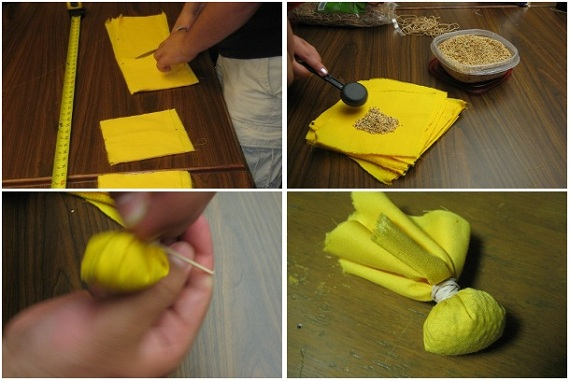

Spackets, short for Spell-Packets, are what we use in LARPing games to simulate projectiles and spells.
Make a spacket
-Acquire
1) 6"x6" fabric
2) thin rubber band
3) 1 tbsp birdseed (no sunflower seeds!)

-Cut squares
-Place birdseed in center of fabric.
-Gather corners of fabric.
-Rubberband the fabric over the birdseed.
-Repeat...forever!
Tips
-Use cheap fabric:
Spackets are practically disposable; they will be lost, traded, trampled, and eaten by small animals. Keeping cost in mind, Look for the least expensive fabric within reason. Thrift stores, garage sales, and Walmart can have cheap fabric, and regular fabric stores typically offer coupons every week for 20-50% off a single cut. Check their websites or sign up for their newsletter, and keep an eye on sales and you will never have to pay more than 1 or 2 dollars a yard. Don't forget to check their clearance area!
-Use non-stretchy fabric:
Knit, elastic and spandex are awful for spackets. They will compress the birdseed from being a nice soft beanbag into a hard lump of pain. Quilter's cotton, broadcloth, muslin (white only) are usually our go-to choices.
-The Right Birdseed:
Absolutely NO sunflower seeds or larger! They are sharp and can poke out of the fabric, and are essentially more like rocks than seeds. When looking for cheap bulk seeds, look in the patio section NOT the pet food section. It's the same seeds, but they can charge you more if its for pet birds rather than wild ones.
-Thin Rubber bands:
When buying rubber bands, office supply stores will have the best deal. You will get more spackets for your money with the thinner rubber bands, they can fit more in a bag. It will also decrease the amount of rubber on the the "neck" of the spacket, making them more comfortable in between your fingers. I buy the biggest bag possible, savings in bulk.
-Pick a color:
When there is an option for color, pick something that will stand out. Green or camo spackets are fine until you lose them in the grass, and white is great until there's snow on the ground. If you use a pattern or color that nobody else is using, then it is way more likely that you will get your spackets returned to you. I've also seen some very impressive characters where the spackets matched their costume's color scheme.
-Make extra:
If you think you have enough spackets, you probably don't. Usually the Larp games will reward players for donating spackets too, and they are always running out. For a little bit of time and a minimal cost, you can reap extra character levels or wealth.
-Store them safely:
Mice and bugs love birdseed. An air-tight resealable container will keep out most pests. Hardware stores sell buckets and lids for a few dollars. Flipped upside down, they double as stools too.
-Practice and customize:
Some like their spackets larger or smaller, looser or tighter. The typical upper bound limit is that a spacket must fit fully within a film canister. Play around with different sizes and shapes throw them around at targets in your room. Cats make great moving targets, and dogs can be trained to fetch them for you.
-Time Savings:
To more quickly prepare the fabric, we have a system. Mark the length of fabric every 6 inches, and rip it into strips. Arrange the strips on top of each other, and cut them every 5-7 inches as needed to best utilize all of the fabric. A stack of 6-10 strips can be cut at once, depending on the fabric and scissors. Remember that mass produced spackets don't need to look that pretty, frayed edges will not be coming under scrutiny. When you are making thousands of spackets, a little time saved adds up.
Back to Props and Boffers